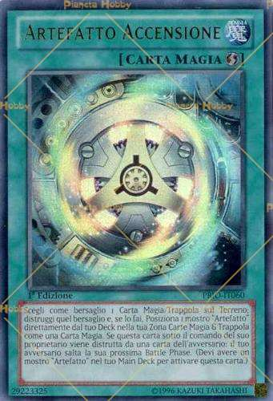

Home - Programmazione 2014- 2020
- Coronavirus - Trasmissione, prevenzione e trattamento
Ordine Psicologi Calabria. Sito dedicato agli psicologi iscritti all'albo. Guide, news, eventi, corsi di formazione e tutte le informazioni utili. - Smith & Nephew Italia | Smith & Nephew - Italia
A partire dai bilanci 2016, le spese di istruttoria sui mutui non sono più considerati oneri accessori su finanziamenti. Per il loro trattamento contabile si vedano I mutui passivi secondo i principi contabili nazionali e Mutui passivi: scritture in partita doppia). - Città di Pescara - Sito Ufficiale del Comune di Pescara ...
L'Incaricato del trattamento dei dati è, ai sensi dell'art. 4, comma 1, lett.h) del decreto legislativo 30 giugno 2003, n. 196, noto come Codice della privacy, "la persona fisica autorizzata a compiere le operazioni di trattamento dal titolare o dal responsabile". L'art. 30 del Codice precisa che le operazioni di trattamento possono essere compiute solo da soggetti nominati incaricati. - Trattamento di fine servizio - Wikipedia
STA - Società Trattamento Acque, impianti trattamento acque civili ed industriali, 20210413 - Ordine degli Psicologi della Calabria · Albo Professionale OPC
Facebook YouTube Instagram Le informazioni contenute in questo sito sono presentate a solo scopo informativo, in nessun caso possono costituire la formulazione di una diagnosi o la prescrizione di un trattamento, e non intendono e non devono in alcun modo sostituire il rapporto diretto medico-paziente o la visita specialistica. - Titolare del trattamento | Protezione dati personali
Il CONOE è il Consorzio istituito, con la funzione di organizzare, controllare e di monitorare la filiera degli oli e dei grassi vegetali ed animali esausti a fini ambientali, a tutela della salute pubblica e, allo scopo di ridurre la dispersione del rifiuto trasformando un costo ambientale ed economico in una risorsa rinnovabile. - Le spese di istruttoria del mutuo passivo: trattamento ...
Il Titolare del trattamento (data controller) è "la persona fisica o giuridica, l'autorità pubblica, il servizio o altro organismo che, singolarmente o insieme ad altri, determina le finalità e i mezzi del trattamento di dati personali" (art.4. par. 1, n. 7 GDPR). In sostanza il titolare è colui che tratta i dati senza ricevere istruzioni da altri, colui che decide "perché" e "come ... - Prevenzione, trattamento e assistenza infermieristica in ...
Il responsabile del trattamento è definito dal GDPR come la persona fisica o giuridica, l’autorità pubblica, il servizio o qualsiasi altro organismo che - Responsabile del trattamento - Altalex
Documenta le attività di trattamento dati all'interno della tua organizzazione. Per adeguarsi alle leggi sulla privacy, in particolare il GDPR, le aziende devono mantenere un registro delle modalità di archiviazione e utilizzo dei dati dei propri utenti. - Conoe – Consorzio nazionale di raccolta e trattamento ...
Smith & Nephew Italia - Cura delle ferite, Ortopedia, Medicina dello Sport e Trauma
Skip to content Scelte rapide da testiera: Home Cos'è GPU Supporto Avvisi FSE Avvisi FESR Rapporti News FAQ Contatti Calendario
4.1.4A-FSEPON-INDIRE-2015-2
Accesso al sistema Menu Home Cos’è GPU Supporto Avvisi FSE FESR FSC Close Rapporti News FAQ Contatti Eventi Seminari Close Area questionari WebinarMiglioramento nella gestione dei processi,
documentazione e monitoraggio dei Progetti
Dati statistici
Ticket lavorati nel mese di Marzo 2021:3.903
Ticket complessivi lavorati:191.195
News
24/2/2021 ISCRIZIONI APERTECiclo di webinar pubblico destinato a tutta la comunità scolastica
Arrivati al termine della programmazione 2014-2020 è previsto un...
30/4/2017 comunicazioneInvio/recupero credenziali di accesso a GPU
Per tutto ciò che riguarda le credenziali di accesso...
8/3/2021 FORMAZIONE GPUNuovo modulo opzionale per il corso online
In occasione di Fiera Didacta 2021 che si svolgerà...
24/12/2020 FORMAZIONE GPUProroga corso on line “Progettazione e gestione degli interventi finanziati nell’ambito del PON per la Scuola 2014-2020”
Si comunica che la data per concludere il corso...
Aggiornamenti avvisi
FESR 15/12/2020Manuale operativo di gestione_versione 11 dic. 2020
Avviso pubblico prot. 13194 del 24/06/2020_adeguamento spazi e aule
FSE 11/11/2020Pubblicate le slides del webinar SCUOLE STATALI
WEBINAR AVVISO PROT.19146 DEL 06/07/2020 PER LE SCUOLE STATALI
FSE 11/11/2020Pubblicate le slides del webinar SCUOLE PARITARIE
WEBINAR AVVISO PROT.19146 DEL 06/07/2020 PER LE SCUOLE PARITARIE
FSE 15/10/2020Manuale operativo gestione_scuole paritarie
Avviso prot. n. 26502 del 06 agosto 2019_contrasto alla povertà educativa
Ultimi rapporti
22/3/2021Volume VI L’educazione alla parità tra i sessi e la prevenzione della violenza di genere: quale è il contributo delle scuole che partecipano al PON?
Il presente volume propone un approfondimento metodologico delle rilevazioni condotte da INDIRE in accordo con l’Autorità di Gestione del PON...
22/3/2021Volume III Quali sono gli effetti del PON nei contesti di grave disagio socio-economico e culturale?
La pubblicazione documenta lo studio pilota di una ricerca qualitativa condotto su cinque istituzioni scolastiche con progetti autorizzati per gli...
22/3/2021Volume I QUALI SONO LE COMPETENZE E LE TECNOLOGIE SULLE QUALI LE SCUOLE HANNO INVESTITO E CHI SONO I DESTINATARI?
Questa pubblicazione contiene i principali dati che si riferiscono alla partecipazione delle istituzioni scolastiche alle iniziative del PON per la...
FESR 1/8/2017Dati in sintesi Candidatura Avviso prot. 3781 del 05/04/2017
Leggi qui il rapporto completo. ...
Note legali Privacy ORIENTAMENTO SITO